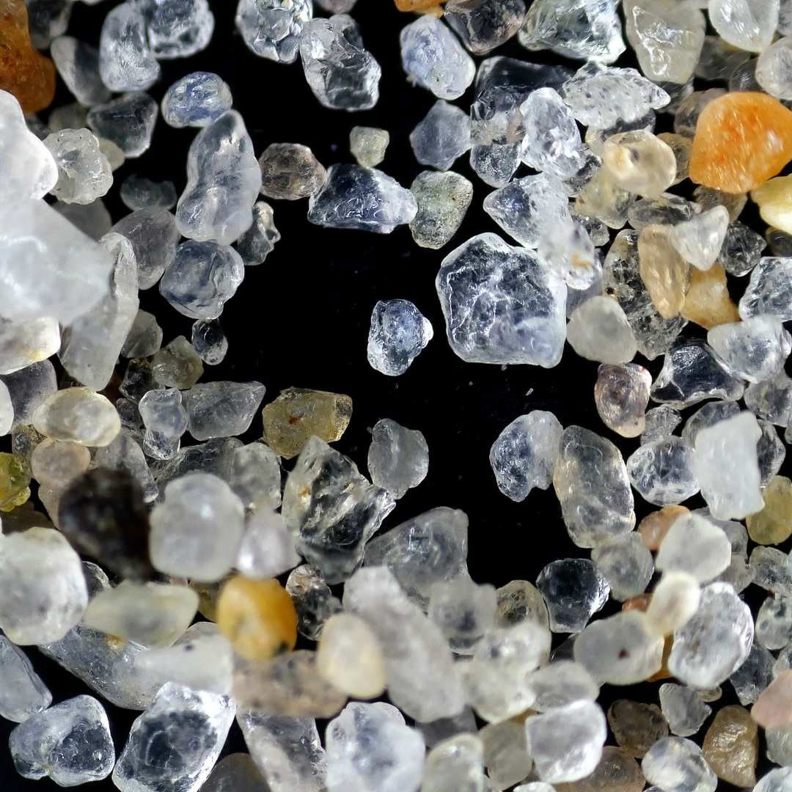

Le secteur de l'habillement, dominé par la fast fashion, est très polluant (10% de l’empreinte carbone en 2022).
Malgré une prise de conscience croissante, les tentatives de consommation circulaire ont jusqu’ici étés entravées par le greenwashing et la consommation compulsive.
'HABIT.' se positionne comme une marque réellement éthique et transparente.
En ciblant les jeunes adultes âgés de 18 à 25 ans, principaux consommateurs de fast fashion, l’objectif est d’ancrer dès le début de leur vie d’adulte des habitudes pérennes de consommation responsable.
Son nom est à l’image de sa communication; engagée, transparente et consciencieuse dans un style frugale, humble, et contemplatif.

Des industries textiles géantes aux plastiques microscopiques
Les microplastiques envahissent nos plages, et les géants de l'industrie textile en sont les principaux responsables.
Lors du lavage des vêtements synthétiques, des fibres plastiques se détachent et finissent dans les océans, faute d'avoir pu être filtrés par les stations d'épuration. Cette situation nous pousse à repenser notre rapport au vêtement dans sa globalité.